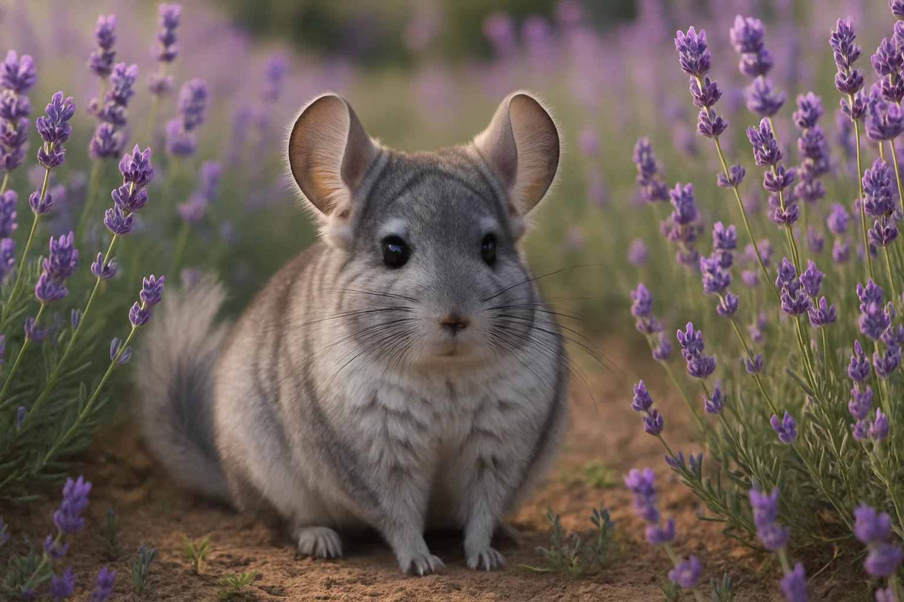
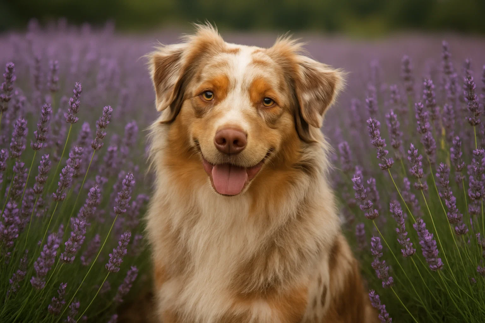

Våre raser

Dverghamster
Roborovski
Roborovski
Dverghamster
Verdens minste hamsterrase — full av energi og sjarm. Våre roborovski-hamstere er håndtamme fra ung alder og oppdratt med fokus på helse og et godt gemytt. Perfekte små følgesvenner for deg som ønsker et aktivt og fascinerende kjæledyr.
Liten & aktiv
Sosial
Nysgjerrig
Lang levetid

Gnager
Chinchilla
Med sin utrolig myke pels og lekne personlighet er chinchillaen et helt spesielt kjæledyr. Våre chinchillaer vokser opp i romslige miljøer med mye stimulering, og vi legger stor vekt på genetisk mangfold og helsetesting.
Myk pels
Leken
Intelligent
15+ års levetid

Hund
Bichon
Bichon
Frisé
Den sjarmerende Bichon Frisé er kjent for sitt glade vesen og allergivennlige pels. Våre valper vokser opp i et hjemmemiljø med masse kjærlighet, tidlig sosialisering og grundig helsesjekk. En perfekt familiehund.
Allergivennlig
Familievennlig
Glad & lojal
Liten størrelse